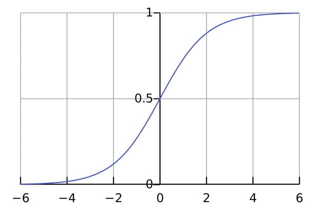

Logistic Regerssion is a linear classifier. Despite the name, it is a classification algorithm. It's very similar to linear regression, so if you are not familiar with it, I recommend you check out my last post, Linear Regression from Scratch in Python. We are going to write both binary classification and multiclass classification.
Before We Get Started
For this tutorial, I assume you know the followings:
- Python(list comprehension, basic OOP)
- Numpy
- Basic Linear Algebra
- Multivariate Calculus(partial derivative)
- Basic machine learning concepts
- Linear Regression
My code follows the scikit-learn style. If you are unfamiliar with scikit-learn, I recommend you check out the website. I also briefly mention it in my post, K-Nearest Neighbor from Scratch in Python.
I'm using python3. If you want to use python2, add this line at the beginning of your file and everything should work fine.
from __future__ import division
The Initial Code
The code looks identical to our linear regression so far:
import numpy as np
class LogisticRegression(object):
def __init__(self, eta=0.1, n_iter=50):
self.eta = eta
self.n_iter = n_iter
def fit(self, X, y):
X = np.insert(X, 0, 1, axis=1)
self.w = np.ones(X.shape[1])
m = X.shape[0]
return self
Sigmoid Function
Before working on fit, let's see what predict looks like. We will change it later, but for now it is exactly the same as our linear regression:
def predict(self, X):
return np.insert(X, 0, 1, axis=1).dot(self.w)
X = np.array([[-2, 2],[-3, 0],[2, -1],[1, -4]])
y = np.array([1,1,0,0])
logi = LogisticRegression()fit(X, y)
print(logi.predict(X))
Output:
[ 1. -2. 2. -2.]
It's not clear what this means. The output should be either 0 or 1 because this is a classification. Instead we got some real numbers. To solve this problem, we can use sigmoid function:
Here is what sigmoid function looks like:

We can interpret this as the probability that the target class is 1. It still isn't 0 or 1, but intuitively, the output should be 1 when \(g(z) >= 0.5\).
Exercise 1
Before we get any further, let's write sigmoid function:
def _sigmoid(self, x):
# Your code here
logi = LogisticRegression()
print(logi._sigmoid(3))
print(logi._sigmoid(-1))
print(logi._sigmoid(0))
Output:
0.952574126822
0.26894142137
0.5
Solution
return 1 / (1 + np.exp(-x))
Exercise 2
Now we can write the correct version of predict. We already have the output. So your code should apply the sigmoid function to the output and return 1 if it's greater than or equal to 0.5, 0 otherwise:
def predict(self, X):
output = np.insert(X, 0, 1, axis=1).dot(self.w)
# Your code here
X = np.array([[-2, 2],[-3, 0],[2, -1],[1, -4]])
y = np.array([1,1,0,0])
logi = LogisticRegression().fit(X, y)
print(logi.predict(X))
Output:
[1 0 1 0]
Solution
You could use list comprehension:
return [1 if i >= 0.5 else 0 for i in self._sigmoid(output)]
But a more elegant approach is to use where:
return np.where(self._sigmoid(output) >= .5, 1, 0)
Update Rule
The update rule looks exactly the same as linear regression:
But in linear regression, \(h(x) = X\theta\). In logistic regression, however, \(h(x) = g(X\theta)\) where \(g\) is sigmoid function. So fit looks like this:
def fit(self, X, y):
X = np.insert(X, 0, 1, axis=1)
self.w = np.ones(X.shape[1])
m = X.shape[0]
for _ in range(self.n_iter):
output = X.dot(self.w)
errors = y - self._sigmoid(output)
self.w += self.eta / m * errors.dot(X)
return self
Every classification class in scikit-learn has the same score method. I talked about it in K-Nearest Neighbor from Scratch in Python, so I will just show the code here:
def score(self, X, y):
return sum(self.predict(X) == y) / len(y)
Here is the complete code:
class LogisticRegression(object):
def __init__(self, eta=0.1, n_iter=50):
self.eta = eta
self.n_iter = n_iter
def fit(self, X, y):
X = np.insert(X, 0, 1, axis=1)
self.w = np.ones(X.shape[1])
m = X.shape[0]
for _ in range(self.n_iter):
output = X.dot(self.w)
errors = y - self._sigmoid(output)
self.w += self.eta / m * errors.dot(X)
return self
def predict(self, X):
output = np.insert(X, 0, 1, axis=1).dot(self.w)
return (np.floor(self._sigmoid(output) + .5)).astype(int)
def score(self, X, y):
return sum(self.predict(X) == y) / len(y)
def _sigmoid(self, x):
return 1 / (1 + np.exp(-x))
We can test the code:
X = np.array([[-2, 2],[-3, 0],[2, -1],[1, -4]])
y = np.array([1,1,0,0])
logi = LogisticRegression().fit(X, y)
print(logi.predict(X))
Output:
[1 1 0 0]
The training accuracy is 100%, meaning the data is linearly separable.
Multiclass Classification
Our logistic regression can only be used for binary classification. When doing multiclass classification, you can use One vs Rest(OvR) method.
Here is how OvR works. Suppose you have 3 target classes, A,B, and C. First you treat B and C as one class, D and run a logistic regression. This classifier separates A and D. Next you treat A and C as D, and so on. You will have 3 independent logistic regressions.
When you predict, you will run the 3 classififers. Each one gives the probability of the class associated with it. Whichever has the highest probability is the most probable class.
Let's see how it's done in code:
class LogisticRegressionOVR(object):
def __init__(self, eta=0.1, n_iter=50):
self.eta = eta
self.n_iter = n_iter
def fit(self, X, y):
X = np.insert(X, 0, 1, axis=1)
self.w = []
m = X.shape[0]
for i in np.unique(y):
y_copy = np.where(y == i, 1, 0)
w = np.ones(X.shape[1])
for _ in range(self.n_iter):
output = X.dot(w)
errors = y_copy - self._sigmoid(output)
w += self.eta / m * errors.dot(X)
self.w.append((w, i))
return self
np.unique(y) creates an array of class labels. For each label, you make y_copy, which changes the labels of y. Now that y_copy has only 1's and 0's, we can run logistic regression. After the inner for loop, self.w.append((w, i)) appends the weights and the correspoing class label to self.w.
Let's test the code on the iris flower dataset. np.set_printoptions sets the precision of float numbers when printing. Notice that I set n_iter to 1000.
from sklearn import datasets
np.set_printoptions(precision=3)
iris = datasets.load_iris()
X = iris.data
y = iris.target
logi = LogisticRegressionOVR(n_iter=1000).fit(X, y)
print(logi.w)
Since the the iris dataset has 4 features and 3 classes, self.w looks like this:
[(array([ 1.11 , 0.174, 2.1 , -2.901, -0.689]), 0),
(array([ 1.509, 0.481, -1.805, 0.49 , -1.268]), 1),
(array([-0.472, -2.298, -1.804, 3.015, 3.19 ]), 2)]
We also make some changes to predict. We are going to predict one instance at a time so the new predict calls _predict_one for each instance and puts them in a list.
def _predict_one(self, x):
# predicts one instance
def predict(self, X):
return [self._predict_one(i) for i in np.insert(X, 0, 1, axis=1)]
Exercise 3
Let's write _predict_one. It should compute \(Xθ\) on each set of weights, take the maximum value, and return the corresponding class label.
def _predict_one(self, x):
# Your code here
Solution
It can be done in 1 line:
def _predict_one(self, x):
return max((x.dot(w), c) for w, c in self.w)[1]
Notice I am not applying sigmoid function to \(Xθ\). Since we just need to take the maximum value, it's not necessary.
Let's test our new logistic regression:
from sklearn.cross_validation import train_test_split
iris = datasets.load_iris()
X_train, X_temp, y_train, y_temp = \
train_test_split(iris.data, iris.target, test_size=.4)
X_validation, X_test, y_validation, y_test = \
train_test_split(X_temp, y_temp, test_size=.5)
logi = LogisticRegressionOVR(n_iter=1000).fit(X_train, y_train)
print(logi.score(X_train, y_train))
print(logi.score(X_validation, y_validation))
Using train_test_split function from cross_validation module, it first splits the data in the ratio 60:40, then splits the latter in half. Now we have 60% for the training set, 20% for the validation and test set.
I ran it multiple times with different n_iter. It looks like we need at least 300 epochs to get a good result. Once you find the good parameters, you can get the true score on the test set.
print(neighbor.score(X_test, y_test))
I encourage you to play with the code and see how changing each parameter affects the accuracy.
Conclusion
If you have questions or comments, tweet @kenzotakahashi and I'll be happy to help.